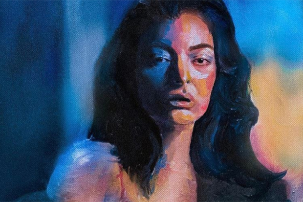
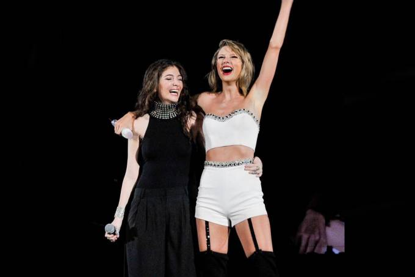
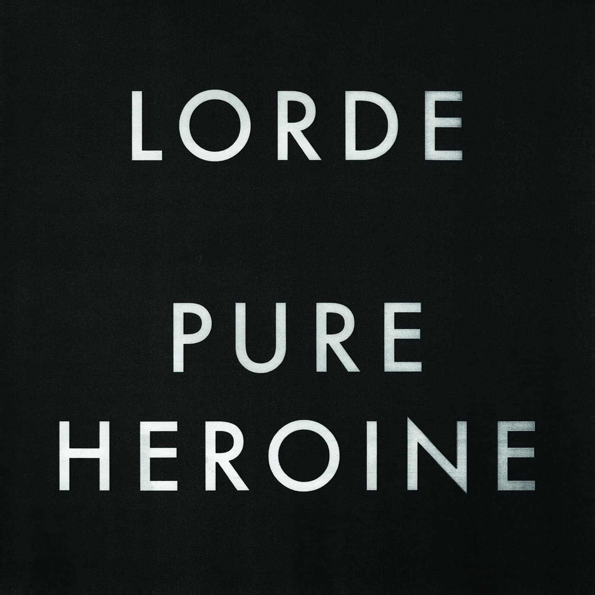
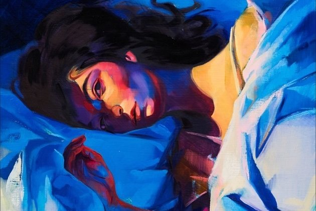

LORDE
One of the best artists of this generation
What makes her great?
-
Speaks from the heart
 This image is associated with Lorde's beautiful and touching song "Liability"Her music can really touch you because of that, seeing (or hearing) someone express their feelings so truthfully brings out your own feelings.
-
Brave
Lorde's unique dancing is a lot of times used by haters to undermine the artistIs truthful to herself and her fans, even if sometimes that means being considered "weird" or "wrong".
-
Unpretentious
 Lorde and Taylor Swift, the famous pop singer, have a strong friendshipDepite all that, Lorde is still a pop singer, and that's okay, she doesn't pretend to be different or better than other artists.
Biography
Lorde, byname of Ella Marija Lani Yelich-O'Connor, was born in November 7, 1996, un Takapuna, New Zealand. She was raised in the suburbs of Aukland and demonstrated a knack for public performance at an early age.
At age of 12 she was signed to a development contract with the Unibersal Music Group after an agent reaceived footage of her singing at a middle-school talent show. A lifelong fascination with royalty and aristocracy inspired her stage name, although she appended an "e" to the end, as she felt that "Lord" was too masculine.
Working with producer Joel Little, Lorde honed her natural gift with words—her mother was an award-winning poet—and the pair produced The Love Club, a five-track EP that was released for free to the Internet-streaming service SoundCloud with little fanfare in November 2012.
Industry tastemakers soon took notice, and The Love Club—and its lead single, “Royals”—rocketed up the charts in New Zealand. The “Royals” buzz rapidly went global, and in August 2013 Lorde became the first female solo artist in 17 years to top the U.S. Billboard alternative chart.
Learn more about Lorde's biographyAlbums
Pure Heroine
Somethig about the album
Learn more about the albumMelodrama
Something about this beautiful album
Learn more about the albumGreat Moments
- Moment one
- Moment two
- Moment three